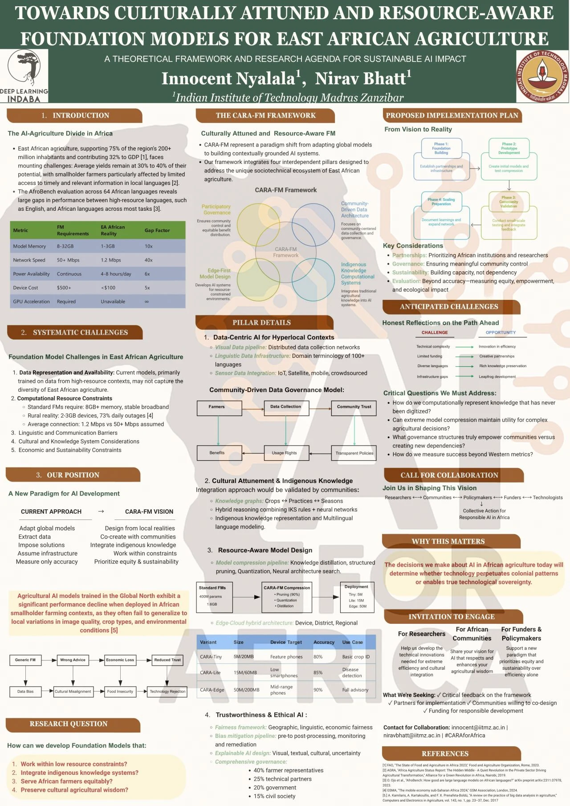

Culturally Attuned and Resource-Aware Foundation Models for East African Agriculture: A Theoretical Framework and Research Agenda
Abstract
East African agriculture supports more than 175 million people yet faces mounting challenges from climate variability, compute scarcity, and information barriers. Current foundation models fail to address the region's computational constraints, linguistic diversity spanning over 200 languages, and distinct ecological knowledge systems. We present CARA-FM, a theoretical framework comprising four pillars: Community-Driven Data Architecture, Indigenous Knowledge Systems, Edge-First Model Design, and Participatory Governance. We define multi-dimensional evaluation metrics spanning technical, agronomic, and cultural criteria to guide foundation model research under severe resource constraints.
Key Findings & Contributions
- Quantifies concrete resource mismatches between standard foundation models (8-32 GB RAM, 50+ Mbps) and East African field realities (1-3 GB smartphones, 1.2 Mbps connectivity, intermittent power).
- Formulates four interdependent design pillars: Community-Driven Data Architecture, Indigenous Knowledge Systems (IKS), Edge-First Model Design (5M-50M params), and Participatory Governance.
- Defines multi-dimensional evaluation criteria balancing technical accuracy with local linguistic coverage, agrarian equity, and energy constraints.
Key Empirical Figure

Benchmark Results
East African Edge Reality vs. Standard Foundation Model Assumptions
| Resource Dimension | Standard FM Assumption | East African Field Reality | Gap Factor |
|---|---|---|---|
| Model Memory (RAM) | 8 - 32 GB | 1 - 3 GB | 10x |
| Network Bandwidth | 50+ Mbps | 1.2 Mbps | 40x |
| Power Availability | Continuous | 4 - 8 hours/day | 6x |
| Target Device Cost | $500+ | < $100 | 5x |
| Cloud GPU Acceleration | Required | Unavailable offline | Inf |
Proposed CARA-FM Edge-Cloud Deployment Tiers
| Tier | Parameter / Size Budget | Target Hardware | Target Acc. | Primary Use Case |
|---|---|---|---|---|
| CARA-Tiny | 5M params / 20 MB | Entry feature & low-end phones | 80% | Offline crop symptom screening |
| CARA-Lite | 15M params / 60 MB | Budget smartphones (1-2 GB RAM) | 85% | Multi-disease field triage |
| CARA-Edge | 50M params / 200 MB | Mid-range extension phones | 90% | Full seasonal advisory |
BibTeX
@inproceedings{nyalala2026carafm,
title={Culturally Attuned and Resource-Aware Foundation Models for East African Agriculture: A Theoretical Framework and Research Agenda},
author={Nyalala, Innocent and Bhatt, Nirav},
booktitle={Deep Learning Indaba 2025 Research Track, Proceedings of Machine Learning Research (PMLR)},
volume={302},
pages={1--11},
year={2026},
url={https://proceedings.mlr.press/v302/nyalala26a.html}
}Nyalala, I., & Bhatt, N. (2026). Culturally Attuned and Resource-Aware Foundation Models for East African Agriculture: A Theoretical Framework and Research Agenda. Proceedings of Machine Learning Research (PMLR), 302, 1–11. https://proceedings.mlr.press/v302/nyalala26a.html